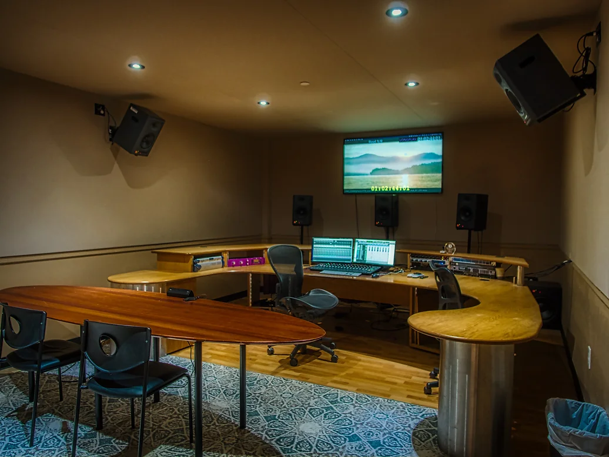

Audio post production is everything that happens to sound after picture editing — shaping dialogue, building environments, integrating performance detail, and creating the final mix audiences actually hear.
I provide full-service audio post production in NYC for film, television, and documentary projects, working from editorial turnover through final delivery with an emphasis on clarity, flexibility, and long-term reliability.
This page offers a straightforward overview of how the process works. For a full list of individual services, visit Services.